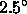
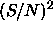
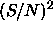

The EDR contains 462 square degrees of imaging data in five bands, and 54,008 spectra in that same area. The data were acquired in three regions: along the celestial equator in the Southern Galactic sky; along the celestial equator in the Northern Galactic sky; and in a region overlapping the SIRTF First Look Survey.
Table 3 summarizes the imaging data included in the EDR. The ``run number'' is a designation we use for one continuous scan of the SDSS imaging camera on the sky, and a ``stripe'' is the great circle covered by a run,  wide. We cover each ``stripe'' in two ``strips'', separated in the north/south direction so that the interleaved scans of the six columns of the imaging camera completely cover the ``stripe.'' We define the great circles for the imaging survey in section 3.2.2. The location of each run and the effective area covered are indicated in the table. Runs 94/125 and 752/756 are long stripes on the equator, in the Southern and Northern Galactic caps, respectively, while runs 1336/1339 and 1356/1359 are shorter scans, off the equator, designed to overlap with the SIRTF First Look Survey. The sky coverage of the resulting imaging and spectroscopic data are illustrated in Figures 1 and 2.
Table 4
summarizes the spectroscopic data. As discussed
in section 4.8, we select objects detected in the imaging
data for spectroscopic observations. The nominal exposure time for
each plate is 45 minutes, which typically yields a signal-to-noise
ratio of 4.5 per pixel for objects with
a  magnitude of 20.2. The measured signal-to-noise ratio at
magnitude of 20.2. The measured signal-to-noise ratio at  for each plate is included in Table 4.
For completeness, we list several plates which were designed but not
unobserved; they have no entry in the  column.
for each plate is included in Table 4.
For completeness, we list several plates which were designed but not
unobserved; they have no entry in the  column.
The overall quality of the EDR is summarized briefly in Table 2.